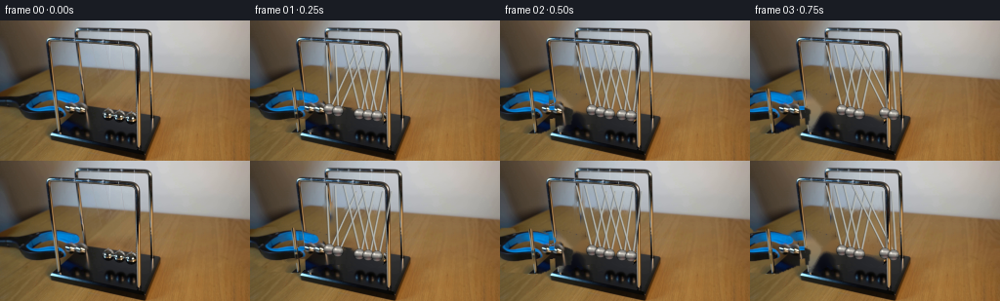
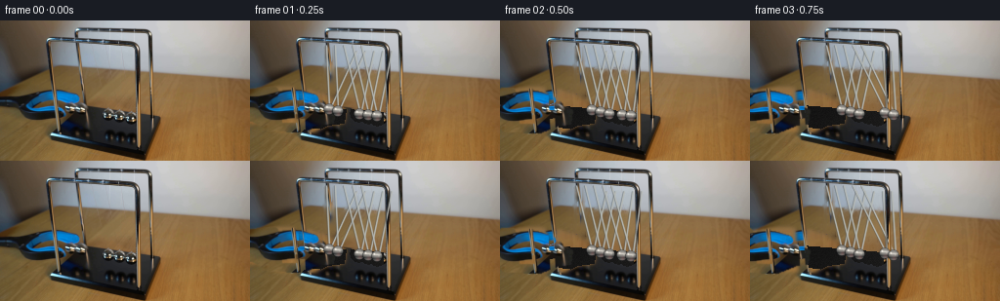
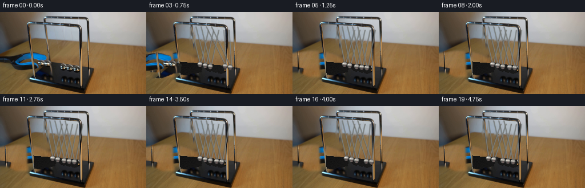
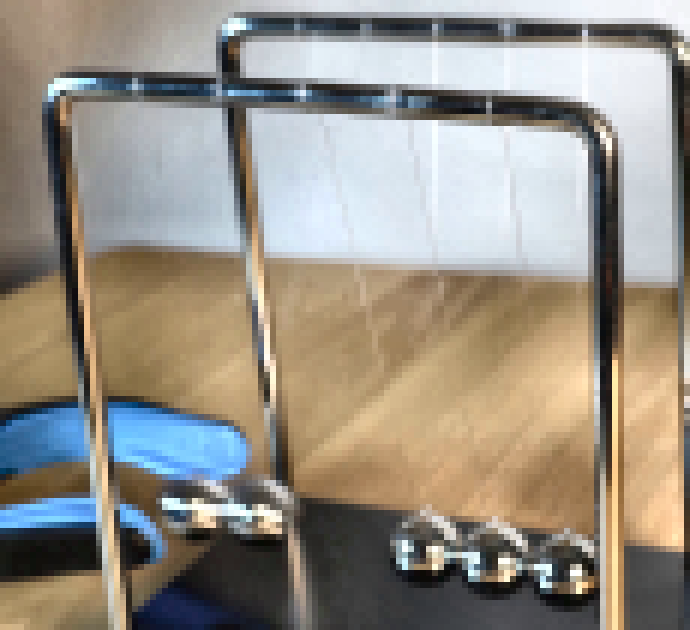
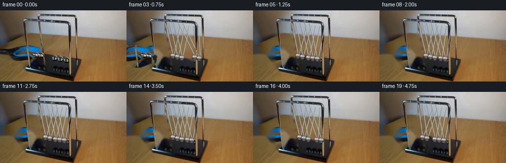
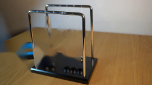
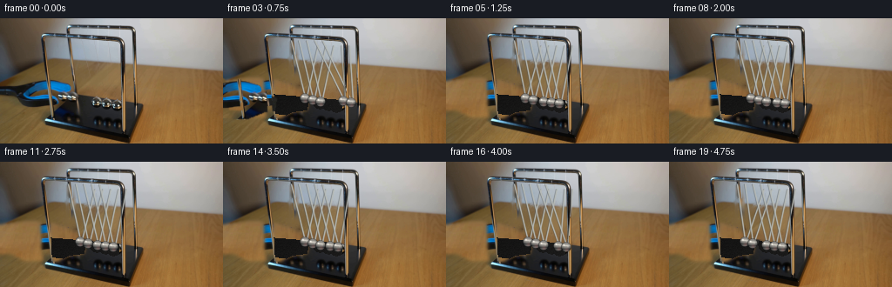
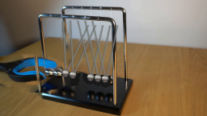

CODING AGENTS AS PIXEL WORLD MODELS
traex/GPT-5.6-Sol · 0054
点击播放 · 原生 RGB 像素
逐轮保存的候选
回放视频、检查图与代码变化。
每份候选均可单独播放。实际图片检查记录在下方工具轨迹中。
候选 01播放与检查图
点击播放 · 原生 RGB 像素


展开代码变化
--- 上一保存版本
+++ 本次保存版本
@@ -0,0 +1,183 @@
+from pathlib import Path
+import math
+import cv2
+import numpy as np
+from PIL import Image
+import artifact_io
+
+HERE = Path(__file__).resolve().parent
+W, H = 256, 144
+src = cv2.cvtColor(np.asarray(Image.open(HERE/'first_frame.png').convert('RGB')), cv2.COLOR_RGB2BGR)
+
+# --- Make a clean photographic plate. Only things which move are removed. ---
+mask = np.zeros((H,W), np.uint8)
+# The hand tool / grabber silhouette. The generous mask also removes its cast shadow.
+tool_poly = np.array([(0,72),(28,68),(56,69),(78,76),(91,87),(98,91),
+ (96,105),(79,107),(66,114),(28,113),(11,105),(0,105)],np.int32)
+cv2.fillPoly(mask,[tool_poly],255)
+# Original five balls.
+initial_centres = [(75,91),(84,93),(111,95),(121,97),(130,99)]
+for p in initial_centres:
+ cv2.circle(mask,p,8,255,-1,cv2.LINE_AA)
+# Fine suspension lines in their original positions. They are subtle, but removing
+# them prevents double images when a pendulum moves.
+eqx = np.array([94.,103.,112.,121.,130.])
+eqy = np.array([92.5,94.,95.5,97.,98.5])
+initx = eqx.copy(); initx[:2] -= 19
+inity = eqy.copy(); inity[:2] -= 2.6
+front_x = np.array([77.,86.,95.,104.,113.])
+back_x = np.array([108.,117.,126.,135.,144.])
+for i in range(5):
+ for ax,ay in ((front_x[i],22.0),(back_x[i],29.0)):
+ cv2.line(mask,(round(ax),round(ay+5)),(round(initx[i]),round(inity[i]-4)),255,2,cv2.LINE_AA)
+# Do not disturb chrome frame members while inpainting.
+protect = np.zeros_like(mask)
+cv2.line(protect,(49,20),(54,116),255,7,cv2.LINE_AA)
+cv2.line(protect,(79,10),(151,11),255,7,cv2.LINE_AA)
+cv2.line(protect,(151,11),(155,111),255,7,cv2.LINE_AA)
+cv2.line(protect,(51,20),(139,21),255,7,cv2.LINE_AA)
+cv2.line(protect,(139,21),(143,116),255,7,cv2.LINE_AA)
+mask[protect>0] = 0
+clean = cv2.inpaint(src, mask, 4.0, cv2.INPAINT_TELEA)
+
+# Replace the dark cradle top where bright ball remnants can make inpaint look pale.
+# Samples are drawn from neighbouring pixels of the same black base, preserving grain.
+rng = np.random.default_rng(54)
+base_poly = np.array([(54,87),(159,96),(145,120),(52,108)],np.int32)
+base_area = np.zeros((H,W),np.uint8); cv2.fillPoly(base_area,[base_poly],255)
+fix = (mask>0) & (base_area>0)
+# Locally median-filtered dark base, with the original luminance variation retained.
+med = cv2.medianBlur(clean,9)
+clean[fix] = med[fix]
+
+# Build a soft alpha extraction of the real grabber. This keeps the exact blue rubber,
+# specular texture and photographic blur from the supplied image.
+yy,xx=np.mgrid[0:H,0:W]
+hsv=cv2.cvtColor(src,cv2.COLOR_BGR2HSV)
+blue=((hsv[:,:,0]>=82)&(hsv[:,:,0]<=122)&(hsv[:,:,1]>70)&(yy>66)&(yy<113)&(xx<100))
+dark=(cv2.cvtColor(src,cv2.COLOR_BGR2GRAY)<88)
+shape=np.zeros((H,W),np.uint8); cv2.fillPoly(shape,[tool_poly],1)
+toolmask=((blue | dark)&(shape>0)).astype(np.uint8)*255
+# Connect dark plastic around the coloured grips while avoiding most table shadow.
+for poly in [np.array([(0,78),(28,72),(59,71),(84,82),(94,91),(88,98),(68,91),(29,86),(0,94)],np.int32),
+ np.array([(0,88),(25,87),(42,105),(63,105),(76,95),(91,94),(92,103),(70,112),(29,113),(13,103),(0,101)],np.int32)]:
+ q=np.zeros_like(toolmask); cv2.fillPoly(q,[poly],255)
+ toolmask=np.maximum(toolmask, q & ((cv2.cvtColor(src,cv2.COLOR_BGR2GRAY)<125).astype(np.uint8)*255))
+toolmask=cv2.morphologyEx(toolmask,cv2.MORPH_CLOSE,np.ones((3,3),np.uint8))
+tool_alpha=cv2.GaussianBlur(toolmask,(0,0),0.65).astype(np.float32)/255
+
+# Chrome frame members that are physically in front of the grabber/wires.
+railmask=np.zeros((H,W),np.uint8)
+cv2.line(railmask,(49,20),(54,116),255,4,cv2.LINE_AA)
+cv2.line(railmask,(50,20),(139,21),255,4,cv2.LINE_AA)
+cv2.line(railmask,(139,21),(143,116),255,4,cv2.LINE_AA)
+# Retain only pixels near a locally strong chrome edge, avoiding a rectangular copy.
+gray=cv2.cvtColor(src,cv2.COLOR_BGR2GRAY)
+chrome=((gray>70).astype(np.uint8)*railmask)
+chrome=cv2.GaussianBlur(chrome,(3,3),0.35).astype(np.float32)/255
+
+def alpha_shift(dst, image, alpha, dx=0, dy=0):
+ """Translate an extracted photographic layer and alpha composite it."""
+ M=np.float32([[1,0,dx],[0,1,dy]])
+ im=cv2.warpAffine(image,M,(W,H),flags=cv2.INTER_LINEAR,borderMode=cv2.BORDER_CONSTANT)
+ a=cv2.warpAffine(alpha,M,(W,H),flags=cv2.INTER_LINEAR,borderMode=cv2.BORDER_CONSTANT)
+ dst[:]=(dst.astype(np.float32)*(1-a[...,None])+im.astype(np.float32)*a[...,None]).clip(0,255).astype(np.uint8)
+
+def draw_wire(im, a, b):
+ # A dark translucent edge and a tiny highlight reproduce thin steel wire.
+ ov=im.copy()
+ cv2.line(ov,(round(a[0]),round(a[1])),(round(b[0]),round(b[1])),(78,77,72),1,cv2.LINE_AA)
+ cv2.addWeighted(ov,0.42,im,0.58,0,im)
+ cv2.line(im,(round(a[0])+1,round(a[1])),(round(b[0])+1,round(b[1])),(181,185,181),1,cv2.LINE_AA)
+
+def draw_shadow(im,cx,cy,r=6):
+ layer=np.zeros_like(im)
+ cv2.ellipse(layer,(round(cx+1),round(cy+6)),(r+2,3),0,0,360,(0,0,0),-1,cv2.LINE_AA)
+ layer=cv2.GaussianBlur(layer,(0,0),2)
+ # multiply-like dark transparent shadow
+ strength=(layer[:,:,0].astype(np.float32)/255*0.38)[...,None]
+ im[:]=(im.astype(np.float32)*(1-strength)).astype(np.uint8)
+
+def draw_ball(im,cx,cy,r=6,variant=0):
+ """Small environment-reflecting steel sphere, analytically shaded at 4x res."""
+ s=4; R=r*s; pad=R+5
+ sz=pad*2+1
+ Y,X=np.mgrid[-pad:pad+1,-pad:pad+1].astype(np.float32)
+ nx=X/R; ny=Y/R; rr=nx*nx+ny*ny
+ cov=np.clip((1.05-np.sqrt(np.maximum(rr,0)))*9,0,1)
+ cov[rr>1.14]=0
+ z=np.sqrt(np.clip(1-rr,0,1))
+ # Reflected room: dark underside/base, cool mid stripe, bright wall and glints.
+ val=56 + 82*z + 35*np.clip(-ny,0,1)
+ val += 72*np.exp(-((ny+0.30)**2)/0.030) * z
+ val -= 58*np.exp(-((ny-0.42)**2)/0.050)
+ val += 98*np.exp(-((nx+0.38+variant*.025)**2+(ny+0.42)**2)/0.025)
+ val += 42*np.exp(-((nx-0.36)**2+(ny+0.05)**2)/0.018)
+ edge=np.clip((z-.02)*2.2,0,1)
+ val*=0.54+0.46*edge
+ b=np.clip(val*0.92+6,0,255); g=np.clip(val*0.98+3,0,255); red=np.clip(val*1.02,0,255)
+ spr=np.dstack([b,g,red]).astype(np.uint8)
+ # slight warm table reflection along lower-right
+ warm=np.exp(-((nx-.15)**2+(ny-.55)**2)/.12)*cov
+ spr[:,:,2]=np.clip(spr[:,:,2]+warm*22,0,255)
+ alpha=(cov*255).astype(np.uint8)
+ spr=cv2.GaussianBlur(spr,(3,3),.45)
+ alpha=cv2.GaussianBlur(alpha,(3,3),.35)
+ spr=cv2.resize(spr,(sz//s,sz//s),interpolation=cv2.INTER_AREA)
+ alpha=cv2.resize(alpha,(sz//s,sz//s),interpolation=cv2.INTER_AREA).astype(np.float32)/255
+ h,w=spr.shape[:2]; x0=round(cx)-w//2; y0=round(cy)-h//2
+ xa=max(0,x0); ya=max(0,y0); xb=min(W,x0+w); yb=min(H,y0+h)
+ if xa>=xb or ya>=yb:return
+ a=alpha[ya-y0:yb-y0,xa-x0:xb-x0,None]
+ im[ya:yb,xa:xb]=(im[ya:yb,xa:xb].astype(float)*(1-a)+spr[ya-y0:yb-y0,xa-x0:xb-x0].astype(float)*a).clip(0,255).astype(np.uint8)
+
+def positions(t):
+ x=eqx.copy(); y=eqy.copy()
+ A0=20.0
+ if t < .45:
+ # Released left pair accelerates into the row.
+ q=max(0,t/.45)
+ off=-A0*math.cos(q*math.pi/2)
+ x[:2]+=off
+ y[:2]-=(off*off)/(2*72)
+ else:
+ seg=int((t-.45)//.75)
+ u=((t-.45)-seg*.75)/.75
+ amp=A0*(.88**(seg+1))
+ off=amp*math.sin(math.pi*u)
+ if seg%2==0:
+ x[3:]+=off; y[3:] -= (off*off)/(2*72)
+ else:
+ x[:2]-=off; y[:2] -= (off*off)/(2*72)
+ return x,y
+
+frames=[]
+for fi in range(20):
+ if fi==0:
+ frames.append(cv2.cvtColor(src,cv2.COLOR_BGR2RGB)); continue
+ t=fi/4.0
+ im=clean.copy()
+ x,y=positions(t)
+ # Real grabber releases at once and withdraws smoothly out of the locked shot.
+ if t<1.05:
+ dx=-round(11 + 42*(t-.25)/.80)
+ dy=round(1.5*(t/.8))
+ alpha_shift(im,src,tool_alpha,dx,dy)
+ # Wires hang from fixed points. Two attachment wires per ball show the perspective.
+ for i in range(5):
+ draw_wire(im,(front_x[i],25),(x[i]-1,y[i]-3))
+ draw_wire(im,(back_x[i],31),(x[i]+1,y[i]-3))
+ # Restore the foremost left/right cradle member over wires and withdrawing tool.
+ a=chrome[...,None]
+ im=(im.astype(np.float32)*(1-a)+src.astype(np.float32)*a).clip(0,255).astype(np.uint8)
+ # Grounding contact shadows and then the five balls.
+ for i in range(5): draw_shadow(im,x[i],y[i],6)
+ for i in range(5): draw_ball(im,x[i],y[i],6,i)
+ # A very slight camera-like softness only on synthesized frames.
+ im=cv2.GaussianBlur(im,(3,3),0.18)
+ frames.append(cv2.cvtColor(im,cv2.COLOR_BGR2RGB))
+
+frames=np.stack(frames).astype(np.uint8)
+assert frames.shape==(20,144,256,3)
+assert np.array_equal(frames[0],np.asarray(Image.open(HERE/'first_frame.png').convert('RGB')))
+artifact_io.save(frames,HERE)
候选 02播放与检查图
点击播放 · 原生 RGB 像素

展开代码变化
--- 上一保存版本 +++ 本次保存版本 @@ -40,15 +40,31 @@ mask[protect>0] = 0 clean = cv2.inpaint(src, mask, 4.0, cv2.INPAINT_TELEA) +# Inpainting a broad, saturated object can drag blue pixels into the hole. Lay in +# actual bare tabletop sampled from the unobstructed right side first. This is a +# perspective-preserving photographic texture patch rather than a flat painted area. +# Its softly feathered outline is entirely on the wood and therefore remains invisible. +table_hole=np.zeros((H,W),np.uint8); cv2.fillPoly(table_hole,[tool_poly],255) +table_hole[(base_area if 'base_area' in locals() else np.zeros_like(mask))>0]=0 +table_hole[protect>0]=0 +donor=np.empty_like(src) +for tx in range(W): + donor[:,tx]=src[:,min(255,165+int(.78*tx))] +ta=cv2.GaussianBlur(table_hole,(0,0),1.8).astype(np.float32)/255 +clean=(clean.astype(np.float32)*(1-ta[...,None])+donor.astype(np.float32)*ta[...,None]).astype(np.uint8) + # Replace the dark cradle top where bright ball remnants can make inpaint look pale. # Samples are drawn from neighbouring pixels of the same black base, preserving grain. rng = np.random.default_rng(54) base_poly = np.array([(54,87),(159,96),(145,120),(52,108)],np.int32) base_area = np.zeros((H,W),np.uint8); cv2.fillPoly(base_area,[base_poly],255) fix = (mask>0) & (base_area>0) -# Locally median-filtered dark base, with the original luminance variation retained. -med = cv2.medianBlur(clean,9) -clean[fix] = med[fix] +# Reconstruct obscured pieces of the matte-black top from its measured dark tone. +# Fine deterministic sensor grain avoids a conspicuously uniform computer patch. +Y,X=np.mgrid[:H,:W] +v=(19 + .08*(X-55) + .10*(Y-90) + rng.normal(0,1.5,(H,W))).clip(11,38) +base_fill=np.dstack([v*.96,v*.98,v]).astype(np.uint8) +clean[fix]=base_fill[fix] # Build a soft alpha extraction of the real grabber. This keeps the exact blue rubber, # specular texture and photographic blur from the supplied image.
候选 03播放与检查图
点击播放 · 原生 RGB 像素


展开代码变化
--- 上一保存版本
+++ 本次保存版本
@@ -45,11 +45,13 @@
# perspective-preserving photographic texture patch rather than a flat painted area.
# Its softly feathered outline is entirely on the wood and therefore remains invisible.
table_hole=np.zeros((H,W),np.uint8); cv2.fillPoly(table_hole,[tool_poly],255)
-table_hole[(base_area if 'base_area' in locals() else np.zeros_like(mask))>0]=0
+early_base=np.zeros((H,W),np.uint8)
+cv2.fillPoly(early_base,[np.array([(54,87),(159,96),(145,120),(52,108)],np.int32)],255)
+table_hole[early_base>0]=0
table_hole[protect>0]=0
donor=np.empty_like(src)
for tx in range(W):
- donor[:,tx]=src[:,min(255,165+int(.78*tx))]
+ donor[:,tx]=src[:,min(255,145+tx)]
ta=cv2.GaussianBlur(table_hole,(0,0),1.8).astype(np.float32)/255
clean=(clean.astype(np.float32)*(1-ta[...,None])+donor.astype(np.float32)*ta[...,None]).astype(np.uint8)
@@ -89,7 +91,8 @@
cv2.line(railmask,(139,21),(143,116),255,4,cv2.LINE_AA)
# Retain only pixels near a locally strong chrome edge, avoiding a rectangular copy.
gray=cv2.cvtColor(src,cv2.COLOR_BGR2GRAY)
-chrome=((gray>70).astype(np.uint8)*railmask)
+sat=cv2.cvtColor(src,cv2.COLOR_BGR2HSV)[:,:,1]
+chrome=(((gray>75)&(sat<105)).astype(np.uint8)*railmask)
chrome=cv2.GaussianBlur(chrome,(3,3),0.35).astype(np.float32)/255
def alpha_shift(dst, image, alpha, dx=0, dy=0):
@@ -104,7 +107,7 @@
ov=im.copy()
cv2.line(ov,(round(a[0]),round(a[1])),(round(b[0]),round(b[1])),(78,77,72),1,cv2.LINE_AA)
cv2.addWeighted(ov,0.42,im,0.58,0,im)
- cv2.line(im,(round(a[0])+1,round(a[1])),(round(b[0])+1,round(b[1])),(181,185,181),1,cv2.LINE_AA)
+ cv2.line(im,(round(a[0])+1,round(a[1])),(round(b[0])+1,round(b[1])),(122,125,122),1,cv2.LINE_AA)
def draw_shadow(im,cx,cy,r=6):
layer=np.zeros_like(im)
@@ -187,8 +190,8 @@
a=chrome[...,None]
im=(im.astype(np.float32)*(1-a)+src.astype(np.float32)*a).clip(0,255).astype(np.uint8)
# Grounding contact shadows and then the five balls.
- for i in range(5): draw_shadow(im,x[i],y[i],6)
- for i in range(5): draw_ball(im,x[i],y[i],6,i)
+ for i in range(5): draw_shadow(im,x[i],y[i],5)
+ for i in range(5): draw_ball(im,x[i],y[i],5,i)
# A very slight camera-like softness only on synthesized frames.
im=cv2.GaussianBlur(im,(3,3),0.18)
frames.append(cv2.cvtColor(im,cv2.COLOR_BGR2RGB))
候选 04播放与检查图

候选 05播放与检查图
点击播放 · 原生 RGB 像素

展开代码变化
--- 上一保存版本
+++ 本次保存版本
@@ -98,7 +98,7 @@
def alpha_shift(dst, image, alpha, dx=0, dy=0):
"""Translate an extracted photographic layer and alpha composite it."""
M=np.float32([[1,0,dx],[0,1,dy]])
- im=cv2.warpAffine(image,M,(W,H),flags=cv2.INTER_LINEAR,borderMode=cv2.BORDER_CONSTANT)
+ im=cv2.warpAffine(image,M,(W,H),flags=cv2.INTER_LINEAR,borderMode=cv2.BORDER_REPLICATE)
a=cv2.warpAffine(alpha,M,(W,H),flags=cv2.INTER_LINEAR,borderMode=cv2.BORDER_CONSTANT)
dst[:]=(dst.astype(np.float32)*(1-a[...,None])+im.astype(np.float32)*a[...,None]).clip(0,255).astype(np.uint8)
可观测工具轨迹
实际执行的命令与返回图片。
命令 1exit 0
/bin/bash -lc "cat prompt.txt && printf '\\n---RULES---\\n' && cat GENERATION_RULES.md"
命令 2exit 0
/bin/bash -lc "find . -maxdepth 2 -type f -printf '%p %s bytes\\n' | sort"
命令 3exit 0
/bin/bash -lc "python3 - <<'PY'
from PIL import Image
im=Image.open('first_frame.png'); print(im.mode,im.size)
im.resize((1024,576)).save('.tmp/enlarged.png')
PY
sed -n '1,240p' artifact_io.py"命令 4exit 0
/bin/bash -lc "python3 - <<'PY'
import cv2
im=cv2.imread('first_frame.png')
crop=im[5:110,40:155]
lab=cv2.cvtColor(crop,cv2.COLOR_BGR2LAB)
L,a,b=cv2.split(lab)
L=cv2.createCLAHE(3,(8,8)).apply(L)
out=cv2.cvtColor(cv2.merge([L,a,b]),cv2.COLOR_LAB2BGR)
cv2.imwrite('.tmp/contrast.png',cv2.resize(out,None,fx=6,fy=6,interpolation=cv2.INTER_NEAREST))
PY"命令 5exit 0
/bin/bash -lc "cat > generate.py <<'PY'
from pathlib import Path
import math
import cv2
import numpy as np
from PIL import Image
import artifact_io
HERE = Path(__file__).resolve().parent
W, H = 256, 144
src = cv2.cvtColor(np.asarray(Image.open(HERE/'first_frame.png').convert('RGB')), cv2.COLOR_RGB2BGR)
# --- Make a clean photographic plate. Only things which move are removed. ---
mask = np.zeros((H,W), np.uint8)
# The hand tool / grabber silhouette. The generous mask also removes its cast shadow.
tool_poly = np.array([(0,72),(28,68),(56,69),(78,76),(91,87),(98,91),
(96,105),(79,107),(66,114),(28,113),(11,105),(0,105)],np.int32)
cv2.fillPoly(mask,[tool_poly],255)
# Original five balls.
initial_centres = [(75,91),(84,93),(111,95),(121,97),(130,99)]
for p in initial_centres:
cv2.circle(mask,p,8,255,-1,cv2.LINE_AA)
# Fine suspension lines in their original positions. They are subtle, but removing
# them prevents double images when a pendulum moves.
eqx = np.array([94.,103.,112.,121.,130.])
eqy = np.array([92.5,94.,95.5,97.,98.5])
initx = eqx.copy(); initx[:2] -= 19
inity = eqy.copy(); inity[:2] -= 2.6
front_x = np.array([77.,86.,95.,104.,113.])
back_x = np.array([108.,117.,126.,135.,144.])
for i in range(5):
for ax,ay in ((front_x[i],22.0),(back_x[i],29.0)):
cv2.line(mask,(round(ax),round(ay+5)),(round(initx[i]),round(inity[i]-4)),255,2,cv2.LINE_AA)
# Do not disturb chrome frame members while inpainting.
protect = np.zeros_like(mask)
cv2.line(protect,(49,20),(54,116),255,7,cv2.LINE_AA)
cv2.line(protect,(79,10),(151,11),255,7,cv2.LINE_AA)
cv2.line(protect,(151,11),(155,111),255,7,cv2.LINE_AA)
cv2.line(protect,(51,20),(139,21),255,7,cv2.LINE_AA)
cv2.line(protect,(139,21),(143,116),255,7,cv2.LINE_AA)
mask[protect>0] = 0
clean = cv2.inpaint(src, mask, 4.0, cv2.INPAINT_TELEA)
# Replace the dark cradle top where bright ball remnants can make inpaint look pale.
# Samples are drawn from neighbouring pixels of the same black base, preserving grain.
rng = np.random.default_rng(54)
base_poly = np.array([(54,87),(159,96),(145,120),(52,108)],np.int32)
base_area = np.zeros((H,W),np.uint8); cv2.fillPoly(base_area,[base_poly],255)
fix = (mask>0) & (base_area>0)
# Locally median-filtered dark base, with the original luminance variation retained.
med = cv2.medianBlur(clean,9)
clean[fix] = med[fix]
# Build a soft alpha extraction of the real grabber. This keeps the exact blue rubber,
# specular texture and photographic blur from the supplied image.
yy,xx=np.mgrid[0:H,0:W]
hsv=cv2.cvtColor(src,cv2.COLOR_BGR2HSV)
blue=((hsv[:,:,0]>=82)&(hsv[:,:,0]<=122)&(hsv[:,:,1]>70)&(yy>66)&(yy<113)&(xx<100))
dark=(cv2.cvtColor(src,cv2.COLOR_BGR2GRAY)<88)
shape=np.zeros((H,W),np.uint8); cv2.fillPoly(shape,[tool_poly],1)
toolmask=((blue | dark)&(shape>0)).astype(np.uint8)*255
# Connect dark plastic around the coloured grips while avoiding most table shadow.
for poly in [np.array([(0,78),(28,72),(59,71),(84,82),(94,91),(88,98),(68,91),(29,86),(0,94)],np.int32),
np.array([(0,88),(25,87),(42,105),(63,105),(76,95),(91,94),(92,103),(70,112),(29,113),(13,103),(0,101)],np.int32)]:
q=np.zeros_like(toolmask); cv2.fillPoly(q,[poly],255)
toolmask=np.maximum(toolmask, q & ((cv2.cvtColor(src,cv2.COLOR_BGR2GRAY)<125).astype(np.uint8)*255))
toolmask=cv2.morphologyEx(toolmask,cv2.MORPH_CLOSE,np.ones((3,3),np.uint8))
tool_alpha=cv2.GaussianBlur(toolmask,(0,0),0.65).astype(np.float32)/255
# Chrome frame members that are physically in front of the grabber/wires.
railmask=np.zeros((H,W),np.uint8)
cv2.line(railmask,(49,20),(54,116),255,4,cv2.LINE_AA)
cv2.line(railmask,(50,20),(139,21),255,4,cv2.LINE_AA)
cv2.line(railmask,(139,21),(143,116),255,4,cv2.LINE_AA)
# Retain only pixels near a locally strong chrome edge, avoiding a rectangular copy.
gray=cv2.cvtColor(src,cv2.COLOR_BGR2GRAY)
chrome=((gray>70).astype(np.uint8)*railmask)
chrome=cv2.GaussianBlur(chrome,(3,3),0.35).astype(np.float32)/255
def alpha_shift(dst, image, alpha, dx=0, dy=0):
\"\"\"Translate an extracted photographic layer and alpha composite it.\"\"\"
M=np.float32([[1,0,dx],[0,1,dy]])
im=cv2.warpAffine(image,M,(W,H),flags=cv2.INTER_LINEAR,borderMode=cv2.BORDER_CONSTANT)
a=cv2.warpAffine(alpha,M,(W,H),flags=cv2.INTER_LINEAR,borderMode=cv2.BORDER_CONSTANT)
dst[:]=(dst.astype(np.float32)*(1-a[...,None])+im.astype(np.float32)*a[...,None]).clip(0,255).astype(np.uint8)
def draw_wire(im, a, b):
# A dark translucent edge and a tiny highlight reproduce thin steel wire.
ov=im.copy()
cv2.line(ov,(round(a[0]),round(a[1])),(round(b[0]),round(b[1])),(78,77,72),1,cv2.LINE_AA)
cv2.addWeighted(ov,0.42,im,0.58,0,im)
cv2.line(im,(round(a[0])+1,round(a[1])),(round(b[0])+1,round(b[1])),(181,185,181),1,cv2.LINE_AA)
def draw_shadow(im,cx,cy,r=6):
layer=np.zeros_like(im)
cv2.ellipse(layer,(round(cx+1),round(cy+6)),(r+2,3),0,0,360,(0,0,0),-1,cv2.LINE_AA)
layer=cv2.GaussianBlur(layer,(0,0),2)
# multiply-like dark transparent shadow
strength=(layer[:,:,0].astype(np.float32)/255*0.38)[...,None]
im[:]=(im.astype(np.float32)*(1-strength)).astype(np.uint8)
def draw_ball(im,cx,cy,r=6,variant=0):
\"\"\"Small environment-reflecting steel sphere, analytically shaded at 4x res.\"\"\"
s=4; R=r*s; pad=R+5
sz=pad*2+1
Y,X=np.mgrid[-pad:pad+1,-pad:pad+1].astype(np.float32)
nx=X/R; ny=Y/R; rr=nx*nx+ny*ny
cov=np.clip((1.05-np.sqrt(np.maximum(rr,0)))*9,0,1)
cov[rr>1.14]=0
z=np.sqrt(np.clip(1-rr,0,1))
# Reflected room: dark underside/base, cool mid stripe, bright wall and glints.
val=56 + 82*z + 35*np.clip(-ny,0,1)
val += 72*np.exp(-((ny+0.30)**2)/0.030) * z
val -= 58*np.exp(-((ny-0.42)**2)/0.050)
val += 98*np.exp(-((nx+0.38+variant*.025)**2+(ny+0.42)**2)/0.025)
val += 42*np.exp(-((nx-0.36)**2+(ny+0.05)**2)/0.018)
edge=np.clip((z-.02)*2.2,0,1)
val*=0.54+0.46*edge
b=np.clip(val*0.92+6,0,255); g=np.clip(val*0.98+3,0,255); red=np.clip(val*1.02,0,255)
spr=np.dstack([b,g,red]).astype(np.uint8)
# slight warm table reflection along lower-right
warm=np.exp(-((nx-.15)**2+(ny-.55)**2)/.12)*cov
spr[:,:,2]=np.clip(spr[:,:,2]+warm*22,0,255)
alpha=(cov*255).astype(np.uint8)
spr=cv2.GaussianBlur(spr,(3,3),.45)
alpha=cv2.GaussianBlur(alpha,(3,3),.35)
spr=cv2.resize(spr,(sz//s,sz//s),interpolation=cv2.INTER_AREA)
alpha=cv2.resize(alpha,(sz//s,sz//s),interpolation=cv2.INTER_AREA).astype(np.float32)/255
h,w=spr.shape[:2]; x0=round(cx)-w//2; y0=round(cy)-h//2
xa=max(0,x0); ya=max(0,y0); xb=min(W,x0+w); yb=min(H,y0+h)
if xa>=xb or ya>=yb:return
a=alpha[ya-y0:yb-y0,xa-x0:xb-x0,None]
im[ya:yb,xa:xb]=(im[ya:yb,xa:xb].astype(float)*(1-a)+spr[ya-y0:yb-y0,xa-x0:xb-x0].astype(float)*a).clip(0,255).astype(np.uint8)
def positions(t):
x=eqx.copy(); y=eqy.copy()
A0=20.0
if t < .45:
# Released left pair accelerates into the row.
q=max(0,t/.45)
off=-A0*math.cos(q*math.pi/2)
x[:2]+=off
y[:2]-=(off*off)/(2*72)
else:
seg=int((t-.45)//.75)
u=((t-.45)-seg*.75)/.75
amp=A0*(.88**(seg+1))
off=amp*math.sin(math.pi*u)
if seg%2==0:
x[3:]+=off; y[3:] -= (off*off)/(2*72)
else:
x[:2]-=off; y[:2] -= (off*off)/(2*72)
return x,y
frames=[]
for fi in range(20):
if fi==0:
frames.append(cv2.cvtColor(src,cv2.COLOR_BGR2RGB)); continue
t=fi/4.0
im=clean.copy()
x,y=positions(t)
# Real grabber releases at once and withdraws smoothly out of the locked shot.
if t<1.05:
dx=-round(11 + 42*(t-.25)/.80)
dy=round(1.5*(t/.8))
alpha_shift(im,src,tool_alpha,dx,dy)
# Wires hang from fixed points. Two attachment wires per ball show the perspective.
for i in range(5):
draw_wire(im,(front_x[i],25),(x[i]-1,y[i]-3))
draw_wire(im,(back_x[i],31),(x[i]+1,y[i]-3))
# Restore the foremost left/right cradle member over wires and withdrawing tool.
a=chrome[...,None]
im=(im.astype(np.float32)*(1-a)+src.astype(np.float32)*a).clip(0,255).astype(np.uint8)
# Grounding contact shadows and then the five balls.
for i in range(5): draw_shadow(im,x[i],y[i],6)
for i in range(5): draw_ball(im,x[i],y[i],6,i)
# A very slight camera-like softness only on synthesized frames.
im=cv2.GaussianBlur(im,(3,3),0.18)
frames.append(cv2.cvtColor(im,cv2.COLOR_BGR2RGB))
frames=np.stack(frames).astype(np.uint8)
assert frames.shape==(20,144,256,3)
assert np.array_equal(frames[0],np.asarray(Image.open(HERE/'first_frame.png').convert('RGB')))
artifact_io.save(frames,HERE)
PY
python3 generate.py
python3 - <<'PY'
from PIL import Image
im=Image.open('inspection.png'); print(im.size)
PY"命令 6exit 0
/bin/bash -lc "python3 - <<'PY'
exec(open('generate.py').read().replace('artifact_io.save(frames,HERE)',\"cv2.imwrite('.tmp/clean.png',clean); artifact_io.save(frames,HERE)\"))
PY"命令 7exit 0
/bin/bash -lc "python3 generate.py && python3 - <<'PY'
import numpy as np
from PIL import Image
z=np.load('pixels.npz')['pixels']; f=np.asarray(Image.open('first_frame.png').convert('RGB'))
p=(f[...,0].astype('u4')<<16)|(f[...,1].astype('u4')<<8)|f[...,2]
print('pixels',z.shape,z.dtype,'first_exact',np.array_equal(z[:,:,0],p),'frames',len(list(__import__('pathlib').Path('frames').glob('*.png'))))
PY"命令 8exit 0
/bin/bash -lc 'python3 generate.py'
命令 9exit 0
/bin/bash -lc "python3 generate.py && python3 - <<'PY'
from PIL import Image
import numpy as np
f=np.asarray(Image.open('first_frame.png').convert('RGB'))
g=np.asarray(Image.open('frames/00.png').convert('RGB'))
print('shape/dtype/exact:',g.shape,g.dtype,np.array_equal(f,g))
PY"视觉工具实际返回图片 1

视觉工具实际返回图片 2

视觉工具实际返回图片 3

视觉工具实际返回图片 4

视觉工具实际返回图片 5

视觉工具实际返回图片 6

视觉工具实际返回图片 7

视觉工具实际返回图片 8

视觉工具实际返回图片 9

保存候选 5 份；完成命令 9 次；可验证图片返回 9 张。原始 API 响应与完整日志保留在本地。